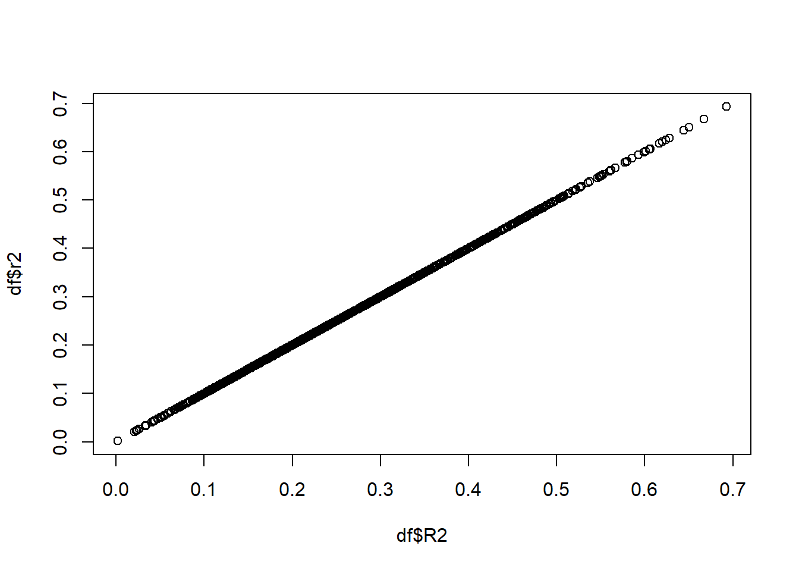

4 \(R^2\) and correlation
For this section, we assume a simple data set that consists of a response variable, \(y\) and an explanatory variable \(x\). Here, I try to show the relationship between the following metrics:
- The correlation between \(x\) and \(y\)
- The \(R^2\) value of the regression model \(y_i = a + bx_i + \epsilon_i\), with \(\epsilon_i\) a residual error from a normal distribution.
- The correlation between \(y\) and \(\hat{y}\), the latter being the predictions from the regression model under 2.
- The \(R^2\) value of the regression model \(y_i = a' + b'\hat{y}_i + \epsilon'_i\).
4.1 Notation
Assume we have an explanatory variable \(x\) and a response variable \(y\). In total we have \(N\) observations, with \(x_i\) the value \(x\) for individual \(i\) and \(y_i\) the value of \(y\) for individual \(i\). The average values of \(x\) and \(y\) are given by \(\overline{x}\) and \(\overline{y}\) respectively. Throughout the following we use the following definitions for variance (\(\sigma_x^2\), \(\sigma_y^2\)) and covariance (\(\sigma_{x,y}\)): \[\begin{align} \sigma_x^2 &= \frac{\sum_{i=1}^N (x_i - \overline{x})^2}{N-1}\\ \sigma_y^2 &= \frac{\sum_{i=1}^N (y_i - \overline{y})^2}{N-1}\\ \sigma_{x,y} &= \frac{\sum_{i=1}^N (x_i - \overline{x})(y_i - \overline{y})}{N-1}\\ \end{align}\]
4.2 Correlation between \(x\) and \(y\)
the correlation coefficient \(r\) equals (Whitlock and Schluter 2015): \[\begin{equation} r = \frac{\sum_{i=1}^N (x_i - \overline{x})(y_i - \overline{y})}{\sqrt{\sum_{i=1}^N (x_i - \overline{x})^2}\sqrt{\sum_{i=1}^N (y_i - \overline{y})^2}} = \frac{\sigma_{x,y}}{\sigma_x\sigma_y} \end{equation}\]
4.3 \(R^2\) value of the linear model
Using the formula in Whitlock and Schluter (2015) , we can determine the intercept and slope for the regression line as: \[\begin{align} b &= \frac{\sum_{i=1}^N (x_i-\overline{x})(y_i-\overline{y})}{\sum_{i=1}^N (x_i - \overline{x})^2} &= \frac{\sigma_{x,y}}{\sigma_x^2} \\ a &= \overline{y} - b \overline{x} &= \overline{y} - \frac{\sigma_{x,y}}{\sigma_x^2} \overline{x}\\ \end{align}\] Next, we define the formula for \(R^2\), which is: \[\begin{equation} R^2 = 1 - \frac{\sum_i (\hat{y_i}-y_i)^2}{\sum_i (\overline{y} - y_i)^2} \end{equation}\] With \(\hat{y_i}=a + b x_i\), this formula becomes: \[\begin{align} R^2 &= 1 - \frac{\sum_i (a+b x_i-y_i)^2}{\sum_i (\overline{y} - y_i)^2}\\ &= 1 - \frac{\sum_i (\overline{y} - \frac{\sigma_{x,y}}{\sigma_x^2}\overline{x} + \frac{\sigma_{x,y}}{\sigma_x^2} x_i-y_i)^2}{\sum_i (\overline{y} - y_i)^2}\\ &= 1 - \frac{\sum_i (\overline{y} -y_i + \frac{\sigma_{x,y}}{\sigma_x^2} (x_i-\overline{x}))^2}{\sum_i (\overline{y} - y_i)^2}\\ &= 1 - \frac{\sum_i (\overline{y} -y_i)^2 + 2\frac{\sigma_{x,y}}{\sigma_x^2} (x_i-\overline{x})(\overline{y} -y_i) + \frac{\sigma_{x,y}^2}{\sigma_x^4} (x_i-\overline{x})^2}{\sum_i (\overline{y} - y_i)^2}\\ &= - \frac{ 2\frac{\sigma_{x,y}}{\sigma_x^2} \sum_i (x_i-\overline{x})(\overline{y} -y_i) + \frac{\sigma_{x,y}^2}{\sigma_x^4} \sum_i (x_i-\overline{x})^2}{\sum_i (\overline{y} - y_i)^2}\\ &= \frac{ 2\frac{\sigma_{x,y}}{\sigma_x^2} \sum_i (x_i-\overline{x})(y_i - \overline{y}) - \frac{\sigma_{x,y}^2}{\sigma_x^4} \sum_i (x_i-\overline{x})^2}{\sum_i (\overline{y} - y_i)^2} \end{align}\] Now we divide both numerator and denominator by \(N-1\) to find: \[\begin{align} R^2 &= \frac{ 2\frac{\sigma_{x,y}}{\sigma_x^2} \sigma_{x,y} - \frac{\sigma_{x,y}^2}{\sigma_x^4} \sigma_x^2}{\sigma_y^2}\\ &= \frac{ \sigma_{x,y}^2}{\sigma_x^2\sigma_y^2}\\ &= r^2 \end{align}\] Hence, for linear regression the \(R^2\) value, is identical to the square of the correlation coefficient. This is a very commonly known result.
4.4 Correlation between \(y\) and \(\hat{y}\)
Now, we focus on a slightly different correlation (\(r'\)), the one between the predictions of the linear model on one hand, and the actual y values on the other. The formula for this correlation should be: \[\begin{equation} r' = \frac{\sum_{i=1}^N (\hat{y}_i - \overline{\hat{y}})(y_i - \overline{y})}{\sqrt{\sum_{i=1}^N (\hat{y}_i - \overline{\hat{y}})^2}\sqrt{\sum_{i=1}^N (y_i - \overline{y})^2}} \end{equation}\] Now we need to simplify this. We will first start by finding an expression for the average prediction, \(\overline{\hat{y}}\), which intuitively should be identical to the average value of \(y\). We write the expression out and simplify: \[\begin{align} \overline{\hat{y}} &= \frac{1}{N} \sum_i (a+bx_i)\\ &= \frac{1}{N} \sum_i (\overline{y} - \frac{\sigma_{x,y}}{\sigma_x^2}\overline{x}+\frac{\sigma_{x,y}}{\sigma_x^2} x_i) \\ &= \overline{y} \end{align}\] And thus: \[\begin{equation} r' = \frac{\sum_{i=1}^N (\hat{y}_i - \overline{y})(y_i - \overline{y})}{\sqrt{\sum_{i=1}^N (\hat{y}_i - \overline{y})^2}\sqrt{\sum_{i=1}^N (y_i - \overline{y})^2}} \end{equation}\] Now we use the earlier found expression that \(\hat{y_i} = a + bx_i = \overline{y} - \frac{\sigma_{x,y}}{\sigma_x^2}\overline{x}+\frac{\sigma_{x,y}}{\sigma_x^2} x_i = \overline{y} +\frac{\sigma_{x,y}}{\sigma_x^2} (x_i-\overline{x})\) to rewrite the expression of \(r'\) to be: \[\begin{align} r' &= \frac{\sum_{i=1}^N \frac{\sigma_{x,y}}{\sigma_x^2} (x_i-\overline{x})(y_i - \overline{y})}{\sqrt{\sum_{i=1}^N (\frac{\sigma_{x,y}}{\sigma_x^2} (x_i-\overline{x}))^2}\sqrt{\sum_{i=1}^N (y_i - \overline{y})^2}} \\ &= \frac{\sum_{i=1}^N (x_i-\overline{x})(y_i - \overline{y})}{\sqrt{\sum_{i=1}^N (x_i-\overline{x})^2}\sqrt{\sum_{i=1}^N (y_i - \overline{y})^2}} \\ &= r \end{align}\]
4.5 \(R^2\) of a linear regression of \(y\) on \(\hat{y}\)
We have shown before that if the correlation coefficient of two variables is r, the \(R^2\) value that is obtained by regressing one variable on the other is equal to \(r^2\). Therefore, the \(R^2\) of the regression of \(y\) on \(\hat{y}\) is identical to \(r^2\). The result shown here holds for simple regressions. We can check these behaviours with a quick simulation:
N <- 10 # number of data points
x <- runif(10)
y <- 2.1*x + 0.6 + rnorm(N)
# 1. correlation squared
cor(x,y)^2## [1] 0.3352486## [1] 0.3352486## [1] 0.3352486## [1] 0.3352486We note that all values are identical.
4.6 \(R^2\) for multiple regression
Without proof, it seems that the \(R^2\) value of a multiple regression is identical to the correlation between the response variables and their predicted values by the multiple regression. For example:
N <- 50
x1 <- runif(N)
x2 <- runif(N)
x3 <- runif(N)
y <- x1 + 2.1*x2 - 0.8*x3 + 4.47*x2*x3 + 5.6 + rnorm(N)
m1 <- lm(y~x1+x2+x3+x2:x3)
summary(m1)$r.squared## [1] 0.5579047## [1] 0.5579047We can repeat this process many times to see how general it is:
reps <- replicate(1e3, {N <- 50
x1 <- runif(N)
x2 <- runif(N)
x3 <- runif(N)
y <- x1 + rnorm(1)*x2 - rnorm(1)*x3 + rnorm(1)*x2*x3 + rnorm(1) + rnorm(N)
m1 <- lm(y~x1+x2+x3+x2:x3)
data.frame(R2=summary(m1)$r.squared,r2=cor(y,predict(m1))^2)
},simplify=FALSE)
df <- do.call(rbind,reps)
max(abs(df$R2-df$r2)) # biggest absolute difference## [1] 6.106227e-16
4.7 \(R^2\) value of more general models
Suppose we have results from a general model that returns predictions \(\hat{y_{*i}}\) for data points with a true value \(y_{*i}\). The \(R_*^2\) value for such a model would be: \[\begin{equation} R_*^2 = 1 - \frac{\sum_i (\hat{y_{*i}}-y_{*i})^2}{\sum_i (\overline{y_*} - y_{*i})^2} \end{equation}\] Now, we can not easily rewrite this as a correlation, because we do not have a closed expression for the predicted values. Let’s assume some made up data as well as some arbitrary predictions:
For these values we can calculate the \(R^2\) value as:
## [1] 0.8786408However, the square of the correlation between the two is:
## [1] 0.9082639Which is not the same!